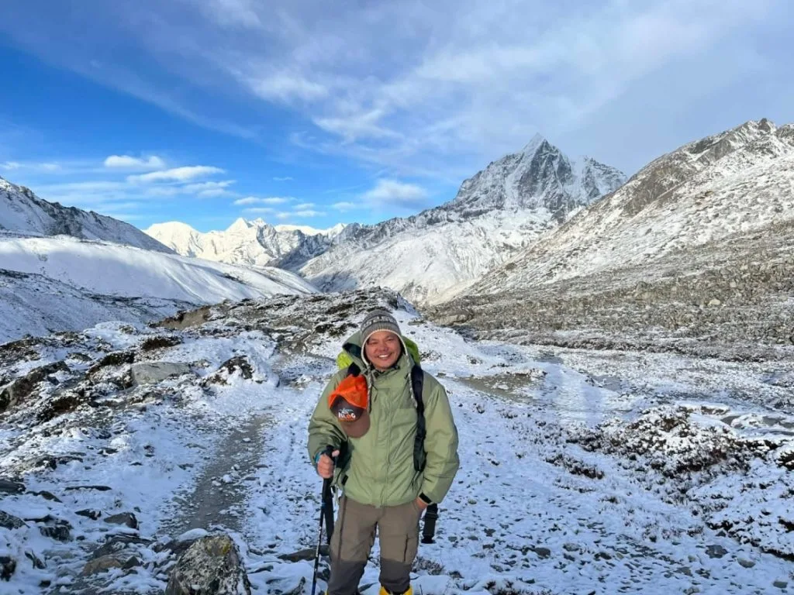
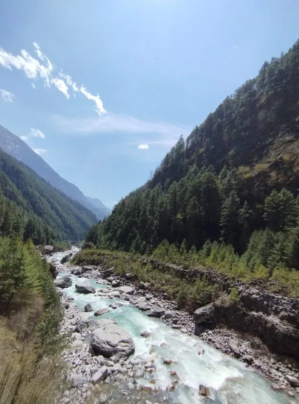

1. Island Peak (Imja Tse) Spring Overview: Why March to May is the Premier Climbing Window
First climbed in 1953 by an iconic British Everest reconnaissance team that included Eric Shipton, Charles Evans, and Tenzing Norgay Sherpa, Island Peak (officially named Imja Tse, 6,189 m / 20,305 ft) earned its colonial name because it appears as an island of rock and ice floating in a vast sea of white glaciers when viewed from Dingboche.
Nestled within the high Chhukung Valley directly beneath the terrifying 3,000-meter south face of Lhotse (8,516 m) and framed by the sharp pyramid of Ama Dablam (6,812 m), Island Peak represents the ultimate initiation for ambitious trekkers transitioning into true Himalayan mountaineering.

Why Mountaineers Choose Spring
While autumn (October–November) offers crisp, post-monsoon visibility, Spring (March to May) is considered by many professional climbing Sherpas as the premier climbing season for several compelling reasons:
- Consolidated Snow Pack: As winter snow gradually warms and consolidates, the notorious 100-meter steep headwall beneath the summit ridge transforms into firm, predictable snow rather than brittle blue ice or loose autumn scree.
- Warmer Summit Temperatures: While October mornings can plunge below -20°C, late April and May dawn temperatures on the summit ridge hover comfortably between -5°C and -12°C, drastically reducing the risk of frostbite and cold-induced lethargy.
- Longer Daylight Windows: Spring days offer nearly 13 hours of natural light, giving climbing teams wider safety buffers if summit day takes 10 to 12 hours.
- The Electric Energy of the Everest Season: In spring, the entire Khumbu Valley comes alive with elite 8,000-meter expeditions heading to Everest and Lhotse, creating an infectious atmosphere of mountaineering camaraderie.
| Climbing Metric | Standard Specification | Mountaineering Context |
|---|---|---|
| Official Summit Elevation | 6,189 m / 20,305 ft | NMA Group B Trekking Peak |
| Alpine Difficulty Grade | PD+ (Peu Difficile+) | French Alpine Scale; technical snow/ice ropes |
| Base Camp Elevation | 5,087 m (Pareshaya Gyab) | Tent camping at glacial lake edge |
| Summit Day Elevation Gain | +1,102 m (from Base Camp) | 10 to 12 hours roundtrip on summit push |
| Steepest Pitch Angle | 45° to 50° vertical ice headwall | Requires Jumar ascender on fixed safety rope |
| Spring Success Rate | 82% – 88% (with prior EBC trek) | Significantly higher than un-acclimatized direct attempts |
2. Spring Weather & Temperature Matrix: March vs. April vs. May Breakdown
Spring in the Himalayas is not a monolithic block of weather. Conditions shift dramatically across the three-month window from early March to late May. Understanding these micro-seasonal nuances allows you to choose the exact climbing dates that match your cold tolerance and technical comfort.

Month-by-Month Spring Analysis
- March (Early Spring — Cold & Crisp): Winter's chill still lingers in early March. Nights at Island Peak Base Camp plunge to -15°C, and the summit headwall can feature hard, bulletproof alpine ice. However, skies are completely cloudless, trails are uncrowded, and there is zero risk of pre-monsoon precipitation. Excellent for experienced mountaineers with high cold tolerance.
- April (Mid-Spring — The Gold Standard Sweet Spot): April is universally regarded as the prime month for Island Peak. Temperatures have warmed moderately (-8°C to -12°C on summit morning), fixed ropes are fully installed and tested by Sherpa rope-fixing teams, snow conditions on the headwall are firmly consolidated, and winds are generally calm.
- May (Late Spring — Warmer & Active): May brings the warmest climbing temperatures (-5°C to -8°C at summit), making the predawn climb significantly more comfortable. However, rising afternoon thermal convection can produce afternoon cloud buildups and occasional late-day snow flurries. Trekkers must maintain an early alpine start (1:00 AM) to summit by 7:30 AM before cloud cover rolls in.
| Month | Base Camp Day / Night Temp | Summit Push Temp (6,189 m) | Snow & Ice Condition | Precipitation Risk | Summit Success |
|---|---|---|---|---|---|
| March | 8°C / -16°C | -18°C to -22°C | Hard packed, bulletproof alpine ice | Very Low (Dry) | 78% (Cold factor) |
| April | 12°C / -10°C | -10°C to -15°C | Firm, consolidated spring snow | Low (Occasional dustings) | 88% (Optimal) |
| May | 15°C / -5°C | -5°C to -10°C | Softening snow; open crevasses | Moderate (Afternoon clouds) | 84% (Warmest) |
3. Master 16-Day Spring Itinerary: EBC Acclimatization Route vs. Direct Chhukung Ascent
The most critical strategic decision in climbing Island Peak is how you acclimatize before the climb. Attempting to rush directly from Lukla to Island Peak Base Camp in 8 or 9 days results in an abysmal failure rate of over 35% due to severe Acute Mountain Sickness (AMS) or extreme physical exhaustion.

The Recommended Master Strategy: EBC + Kala Patthar First
At Igloo Himalaya Treks, our proven expedition blueprint leads climbers to Everest Base Camp (5,364 m) and Kala Patthar (5,545 m) *before* attempting Island Peak.
By sleeping at Gorak Shep (5,164 m) and standing on Kala Patthar at 5,545 meters, your body completes its physiological red-blood-cell adaptation. When you subsequently descend to Chhukung (4,730 m) for your summit push, your body feels energetic and fully acclimatized.
| Day | Route Segment | Night Elevation | Activity Focus |
|---|---|---|---|
| Day 1 | Flight Kathmandu/Ramechhap → Lukla → Phakding | 2,610 m | Arrival in Khumbu, gentle valley hike |
| Day 2 | Phakding → Monjo → Namche Bazaar | 3,440 m | Hillary Suspension Bridge, climb to Sherpa capital |
| Day 3 | Namche Bazaar Acclimatization Day | 3,440 m | Hike to Everest View Hotel (3,880 m) & Khumjung |
| Day 4 | Namche Bazaar → Tengboche | 3,867 m | Visit Tengboche Monastery with Ama Dablam views |
| Day 5 | Tengboche → Dingboche | 4,410 m | Enter the Imja Valley alpine scrub zone |
| Day 6 | Dingboche → Lobuche | 4,940 m | Thukla Pass climber memorials, moraine walking |
| Day 7 | Lobuche → Gorak Shep → Everest Base Camp | 5,164 m | Reach Everest Base Camp (5,364 m)! |
| Day 8 | Gorak Shep → Kala Patthar (5,545 m) → Dingboche | 4,410 m | Sunrise panorama of Everest, descend to thick air |
| Day 9 | Dingboche → Chhukung | 4,730 m | Short 3-hour hike, afternoon technical gear check |
| Day 10 | Chhukung: Pre-Climb Skills Clinic & Rest | 4,730 m | Rope ascending (Jumar), abseiling practice, rest |
| Day 11 | Chhukung → Island Peak Base Camp | 5,087 m | Tent camp setup, early dinner, sleep at 6:00 PM |
| Day 12 | SUMMIT DAY: Base Camp → Summit (6,189 m) → Chhukung | 4,730 m | 1:00 AM alpine start, summit push, return to lodge |
| Day 13 | Weather Contingency Reserve Day | 4,730 m | Buffer day in case of high winds or heavy snowfall |
| Day 14 | Chhukung → Tengboche → Namche Bazaar | 3,440 m | Descent through pine forests, celebration in Namche |
| Day 15 | Namche Bazaar → Phakding → Lukla | 2,846 m | Final trail celebration with Sherpa climbing team |
| Day 16 | Lukla → Kathmandu / Ramechhap | 1,400 m | Scenic mountain flight back to capital |
4. Technical Climbing Grade & Mountain Hazards: Headwall, Crevasses & Bergschrund
Island Peak is classified as a "Trekking Peak" by the Nepal Mountaineering Association (NMA), but this label is dangerously misleading to beginners. It is not a trekking hike; it is an authentic glaciated high-altitude alpine climb graded Alpine PD+ (Peu Difficile+ / Somewhat Difficult).

The 4 Distinct Climbing Stages
Summit day is divided into four radically distinct topographical sections:
- The Rocky Scramble (5,100 m – 5,800 m): Departs Base Camp at 1:30 AM in the pitch black. Climbers navigate a steep, loose dirt gully and open rock slabs by headlamp. This section requires sturdy scrambling with trekking poles (no crampons yet).
- Crampon Point & The Glacial Traverse (5,800 m – 6,050 m): At Crampon Point, climbers put on climbing harnesses, helmets, and crampons, and rope up into teams. The trail crosses the glaciated plateau, navigating open crevasses, seracs, and snow bridges.
- The 100-Meter Ice Headwall (6,050 m – 6,150 m): The crux of the entire climb. A sheer 45° to 50° vertical wall of ice and hard-packed snow. Climbers clip their Jumar (handled ascender) and safety leash onto pre-fixed ropes installed by the Sherpa team, hauling themselves upward step-by-step using front-point crampon technique.
- The Exposed Knife-Edge Summit Ridge (6,150 m – 6,189 m): Exiting the headwall brings you onto a razor-thin, airy snow ridge with thousands of feet of exposure dropping off toward the Lhotse Shar glacier. Clipped to safety ropes, you walk carefully across the crest to the small summit platform.
5. Navigating Glacial Crevasses & Aluminum Ladders in Spring Snow Conditions
One of the most thrilling—and mentally intimidating—elements of climbing Island Peak in spring is crossing bottomless glacial crevasses on horizontal aluminum ladders, similar to those made famous on Mount Everest's Khumbu Icefall.

Why Ladders Are Required in Spring
As the Imja Glacier flows downward, tensions rip open deep vertical fissures (crevasses) up to 20 to 30 meters deep. During winter, fragile snow bridges span these gaps, but by mid-April and May, rising solar radiation causes snow bridges to collapse. To ensure safe passage, Sherpa climbing teams lash industrial aluminum extension ladders across the gaps, anchored by snow pickets and ice screws.
Technique for Ladder Crossings with Crampons
- Dual Safety Tethering: Before stepping onto a ladder, your climbing harness cow's tail (safety leash) and Jumar are clipped onto the overhead fixed safety rope running parallel to the ladder. If you slip, the rope catches you immediately.
- Foot Placement: Step with the middle of your crampon sole directly across the ladder rungs—never between them. Keep your toes pointed straight ahead.
- Keep Moving: Do not look down into the black abyss beneath the ladder rungs; focus your eyes on the snow bank on the opposite side and walk with steady, deliberate steps.
6. Essential Technical Mountaineering Gear & Spring Equipment Checklist
Climbing to 6,189 meters demands professional-grade mountaineering equipment. Standard trekking boots and soft hiking gear are strictly prohibited above Crampon Point.

Mandatory Technical Hardware Checklist
| Equipment Item | Recommended Model / Spec | Function / Use on Island Peak |
|---|---|---|
| Mountaineering Boots | Double boots (Scarpa Phantom 6000 / La Sportiva G2) | Rigid sole for crampons; insulated inner boot prevents frostbite |
| Steel Crampons | 12-point semi-automatic or automatic steel crampons | Front-pointing on the 45° headwall; glacier walking |
| Ice Axe | Classic walking / semi-technical axe (55–65 cm) | Self-arrest, third point of contact on steep snow slopes |
| Climbing Harness | Alpine harness with adjustable leg loops | Must fit comfortably over bulky down pants |
| Jumar (Ascender) | Petzl Ascension or Black Diamond Index | Ascending fixed vertical ropes on the headwall |
| Belay / Descender Device | Figure-8 descender or Black Diamond ATC Guide | Abseiling / rappelling down the steep headwall |
| Safety Leash (Cow's Tail) | Dynamic climbing rope sling (120 cm) with 2 locking carabiners | Clipping into fixed safety anchors and ladder bridges |
| Climbing Helmet | Petzl Sirocco or Black Diamond Half Dome | Protection against rockfall in the lower gully |
Rental Gear in Chhukung Village
If you do not own double mountaineering boots, crampons, or an ice axe, high-quality climbing gear can be rented directly in Chhukung village (4,730 m) for approximately $80 to $120 USD for the entire climb. Our Sherpa guides inspect and custom-fit every rental piece before departing Chhukung.
7. Base Camp (5,087 m) vs. High Camp (5,600 m): Tactical Camping Strategy
Expedition operators historically debated whether to launch summit bids from Base Camp (Pareshaya Gyab, 5,087 m) or push an intermediate camp at High Camp (5,600 m). In modern spring expeditions, virtually all premier Sherpa-led teams choose Base Camp.

Why High Camp is Rarely Used Today
- Severe Altitude & Poor Sleep Quality: Sleeping at 5,600 meters places immense physiological stress on the body. Climbers at High Camp suffer headaches, nausea, and fitful sleep, arriving at summit morning already exhausted.
- No Natural Water Source: High Camp has zero running water. All water must be carried up from Base Camp or melted from dirty, windblown snow with portable gas stoves.
- Extreme Wind Exposure: High Camp sits on an exposed rocky ridge vulnerable to violent nocturnal Himalayan gusts that can rip tent seams.
- The Modern Solution: By sleeping at Base Camp (5,087 m), climbers enjoy a hot, nutritious dinner cooked in a full mess tent, sleep soundly, and simply wake up two hours earlier (12:30 AM) to begin the climb.
8. The 12-Hour Summit Day Breakdown: Midnight Push to Afternoon Return
Summit day on Island Peak is a grueling, exhilarating 10 to 12-hour alpine marathon. You will climb more than 1,100 vertical meters and descend back to Chhukung on the same day.

Hour-by-Hour Summit Timeline
| Time | Altitude | Action / Milestone |
|---|---|---|
| 12:30 AM | 5,087 m | Wake-up call, hot porridge, black tea, gear check, filling thermal flasks |
| 1:30 AM | 5,087 m | Alpine Start: Depart Base Camp by headlamp into the dark rocky gully |
| 4:30 AM | 5,800 m | Reach Crampon Point: Switch trekking poles for ice axe; fit crampons & harness |
| 5:30 AM | 5,950 m | Glacier traverse; dawn breaks over Makalu and Baruntse to the east |
| 6:30 AM | 6,050 m | Base of the Ice Headwall: Clip Jumar to fixed lines; begin vertical ascent |
| 7:30 AM – 8:30 AM | 6,189 m | SUMMIT OF ISLAND PEAK! 360° views of Lhotse, Makalu, Ama Dablam & Baruntse |
| 9:00 AM | 6,100 m | Controlled abseiling (rappelling) down the headwall on figure-8 descender |
| 11:30 AM | 5,800 m | Return to Crampon Point; remove crampons; descend rocky gully |
| 1:30 PM | 5,087 m | Return to Base Camp; celebratory hot soup, pack personal gear |
| 4:30 PM | 4,730 m | Walk back to warm teahouse in Chhukung for celebratory dinner and bed |
9. Sherpa Guide Ratios, Fixed Lines & Expedition Safety Standards
High-altitude mountaineering carries inherent risks. On Island Peak, your safety depends almost entirely on the expertise of your climbing Sherpa guide and the safety ratio of your expedition.

Why the 1:1 or 1:2 Guide Ratio is Crucial
Budget discount operators frequently cut costs by assigning a single climbing guide to four or five clients (1:4 or 1:5 ratio). This is extremely dangerous on a glaciated peak:
- If one client suffers Acute Mountain Sickness or exhaustion on the headwall and must turn around, the entire group is forced to abandon their summit attempt because a single guide cannot split up.
- At Igloo Himalaya Treks, we maintain a strict 1:1 or 1:2 climbing Sherpa-to-client ratio. If one climber needs to descend, a dedicated Sherpa safely escorts them down while the rest of the team continues to the summit.
Fixed Line Installation & Maintenance
Fixed safety ropes on Island Peak are installed and maintained throughout the spring season by specialized Sherpa teams coordinated by the Nepal Mountaineering Association (NMA). Each expedition pays a fixed-rope maintenance fee to ensure ropes are anchored securely into solid rock and ice with heavy-duty snow pickets and ice screws.
10. Pre-Climb Training & Skills Review in Chhukung Village
Even if you have practiced climbing skills at home, rehearsing your systems at 4,730 meters in Chhukung village the day before the climb is mandatory for safety and confidence.

The Chhukung Skills Clinic Curriculum
During the rest day in Chhukung, your climbing Sherpa will set up a practice rope system on a nearby boulder or hillside:
- Jumar Ascender Mechanics: Practicing smooth upward sliding of the Jumar on vertical ropes and locking it under body weight.
- Anchor Transitions: Rehearsing the critical safety sequence when reaching an anchor knot: clipping your safety cow's tail above the knot *before* unclipping the Jumar. You are never unclipped from safety lines.
- Abseiling / Rappelling with Figure-8: Practicing controlled rappelling down steep slopes while wearing bulky insulated gloves.
- Boot & Crampon Pairing: Ensuring crampon bindings fit your mountaineering boots tightly with zero heel lift.
11. NMA Climbing Permits, Garbage Deposits & 2026 Regulatory Rules
Climbing Island Peak requires legal authorization from the Nepal Mountaineering Association (NMA) and the Department of National Parks. Climbing without official permits is a criminal offense under Nepalese law.

2026 NMA Climbing Permit Fees
The NMA sets permit fees based on the climbing season:
- Spring Season (March to May): $250 USD per climber
- Autumn Season (September to November): $125 USD per climber
- Winter & Summer Seasons (Dec–Feb, Jun–Aug): $70 USD per climber
Additional Mandatory Fees & Deposits
- Sagarmatha National Park Entry Permit: NPR 3,000 (~$23 USD) + 13% VAT per person.
- Khumbu Pasang Lhamu Municipality Entry Permit: NPR 3,000 (~$23 USD) per person.
- NMA Refundable Garbage Deposit: $500 USD per expedition, refunded in Kathmandu after submitting proof of proper waste management verified by the SPCC.
- Climbing Staff Insurance: Mandatory life and high-altitude medical insurance for all Sherpa climbing guides, kitchen staff, and sirdars.
12. Expedition Nutrition, Hydration & Cold-Weather Camp Life
Summit day on Island Peak burns between 5,000 and 6,500 calories. At 6,000 meters, high altitude induces rapid dehydration, blunts hunger, and causes nausea if your digestive tract is fed heavy, indigestible foods.

Hydration Strategy: The Insulated Flask Rule
Temperatures during the midnight summit start drop to -15°C. Water inside standard plastic bottles or backpack hydration bladder hoses will freeze solid within 45 minutes.
- Carry two 1-liter wide-mouth Nalgene bottles protected inside insulated thermal neoprene bottle jackets.
- Fill bottles with boiling hot water before departing Base Camp.
- Carry an insulated 500ml vacuum thermos with hot electrolyte lemon-ginger tea.
Summit Day Pocket Snacks
Standard chocolate candy bars freeze into rock-hard bricks that can break your teeth at -15°C. Pack soft, chewy, high-energy snacks: energy chews, sports gels, dried figs, dates, salted nuts, and pocket marzipan. Keep your summit snacks inside an internal jacket pocket close to your chest to keep them warm and chewable.
13. Island Peak vs. Mera Peak vs. Lobuche East: Spring Peak Comparison
Climbers planning a high-altitude expedition in Nepal frequently debate between the country's three most famous 6,000-meter trekking peaks: Island Peak (6,189 m), Mera Peak (6,476 m), and Lobuche East (6,119 m).

| Comparison Feature | Island Peak (6,189 m) | Mera Peak (6,476 m) | Lobuche East (6,119 m) |
|---|---|---|---|
| Summit Elevation | 6,189 m / 20,305 ft | 6,476 m / 21,247 ft (Highest) | 6,119 m / 20,075 ft |
| Technical Difficulty | Alpine PD+ (Steep headwall & ridge) | Alpine F (Non-technical glacier walk) | Alpine PD+ to AD- (Steep rock & ice) |
| Fixed Rope Climbing | 100 m headwall (45°–50°) + ridge | Minimal (Short final summit pitch) | Significant (Long rock slabs & ice wall) |
| EBC Trail Proximity | Directly in Chhukung (Next to EBC) | Isolated remote Hinku Valley approach | Directly on main EBC trail (Lobuche) |
| Best For | First-time mountaineers seeking real alpine fixed-line thrill | Hikers seeking maximum altitude with low technicality | Aspiring mountaineers preparing for Everest or Ama Dablam |
14. Travel Insurance, 6,500m Mountaineering Coverage & Emergency Evacuation
One of the most dangerous oversights aspiring climbers make is purchasing standard "trekking travel insurance" that caps coverage at 5,000 or 5,500 meters. Trekking insurance is completely void on Island Peak.

The 6,500-Meter Technical Mountaineering Rider
Because Island Peak exceeds 6,000 meters and involves technical equipment (ropes, harness, crampons, ice axes), you must purchase a specialist mountaineering policy that explicitly covers:
- Mountaineering / Peak Climbing up to 6,500 meters (21,500 ft)
- Emergency search-and-rescue helicopter evacuation
- Inpatient hospital care and hyperbaric chamber treatment in Kathmandu
Recommended Specialist Insurers
- Global Rescue: The premier global choice for emergency high-altitude medical rescue and helicopter dispatch.
- Ripcord Rescue Travel Insurance: Comprehensive medical evacuation and mountaineering coverage.
- British Mountaineering Council (BMC): (For UK residents, Alpine & Ski policy).
- World Nomads Explorer Plan: (Must explicitly select high-altitude mountaineering upgrade tier).
Frequently Asked Questions (FAQ) About Island Peak Climbing in Spring
Select a category below to explore expert answers to the most common questions travelers ask about Island Peak in Spring Season:
Difficulty & Fitness

Ready to Experience the Himalayas?
Whether you are preparing for high-altitude trekking, cultural circuits, or alpine summit expeditions, start planning a bespoke journey tailored to your fitness, travel season, and style.